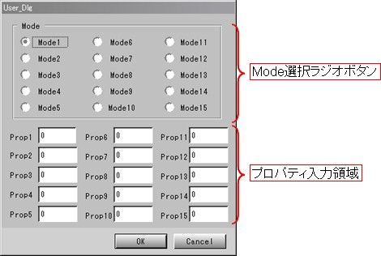

各ウィンドウの名称と機能
Kodatunoのメイン画面及び各アイコンの説明を下図に示します．W/S Verでは，グラフィック描画領域に加え，種々の操作アイコンやコンソールが用意されています．
N/G Verでは，シンプルなグラフィック描画領域と，簡易メニュー選択画面が用意されているのみです．
［Wide Studio Versionの外観］

- Wide Studio Version
- グラフィック描画領域
読み込まれたIGESまたはSTLデータが描画されます．Kodatunoでは，これら立体データのことを Bodyと呼びます．
このグラフィック描画領域内でマウス/キーボード操作を行うことにより，以下に示す操作が可能です． N/G VerとW/S Verで操作が異なりますので注意してください．
a) 拡大 ----- Ctrl+真ん中ドラッグで右方向へマウスを移動
b) 縮小 ----- Ctrl+真ん中ドラッグで左方向へマウスを移動
c) 平行移動 --- 真ん中ドラッグ
d) 回転 ----- 右ドラッグ
e) ピッキング --- 左クリック
f) スィープセレクション --- 左ドラッグ
g) 15度回転 ---- Ctrl+上下左右矢印キー
- グラフィック操作アイコン
上図に示すような，種々のグラフィック操作が可能です．
- Bodyの読み込み及び削除
N/G Verでは，実行ファイルを実行後，コンソール画面で読み込みたいIGES/STLファイル名を入力します．
W/S Verでは，"Open"ボタンを押下することにより，IGES，STLファイル選択ダイアログが開きます． IGESあるいはSTLファイルを選択すると，グラフィック描画領域に選択されたBodyが描画されます． また，選択したBody名がBody名表示画面に表示されます．読み込めるBodyの数は最大8つです． 描画されているBodyを選択し，"Delete"ボタンを押すと，選択されたBodyが削除されます．
- ユーザー用ボタン
このボタンはユーザーが独自に設定可能なボタンです．以下の2種類のボタンが用意されています．
- "User Status"ボタン・・・・・このボタンを押すと，下図に示すダイアログが表示されます．

［User Status ダイアログ］
- "User Func"ボタン・・・・・5つの"User Func"ボタンがあります．これらも前述の"User Status"と同様， ユーザーが自由に，各ボタンを押した場合の処理を割り当てることができます．
- "User Status"ボタン・・・・・このボタンを押すと，下図に示すダイアログが表示されます．
- コンソール
各種メッセージの表示や，コマンドの入力が可能です．コマンドの種類に関しては次の 2.4 各コマンドの名称と機能を参照してください．
- グラフィック描画領域
- No GUI Version
- グラフィック描画領域
a) 拡大 ----- Ctrl+真ん中ドラッグで右方向へマウスを移動
b) 縮小 ----- Ctrl+真ん中ドラッグで左方向へマウスを移動
c) 平行移動 --- Shift+真ん中ドラッグ
d) 回転 ----- 真ん中ドラッグ
e) ピッキング --- 左クリック
f) スィープセレクション --- 左ドラッグ
g) メニュー表示 --- 右クリック
- メニュー
右クリックによりメニューを表示させることができます．
a) Execute User Function ----- ユーザーが独自に作成したプログラムを登録し，実行することができます
b) Selection Cancel ----- セレクションをキャンセルします
c) Draw BODY ON/OFF ----- モデルの表示/非表示を切り替えます
d) Draw Sraface ON/OFF ----- ワイヤーフレーム表示/ソリッド表示を切り替えます
e) View Angle ----- ビューアングルをX,Y,Z各軸上からの始点に切り替えます
f) Version info ----- バージョン情報をコンソールに出力
- グラフィック描画領域